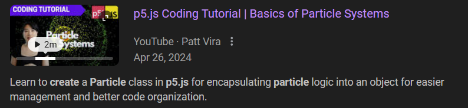
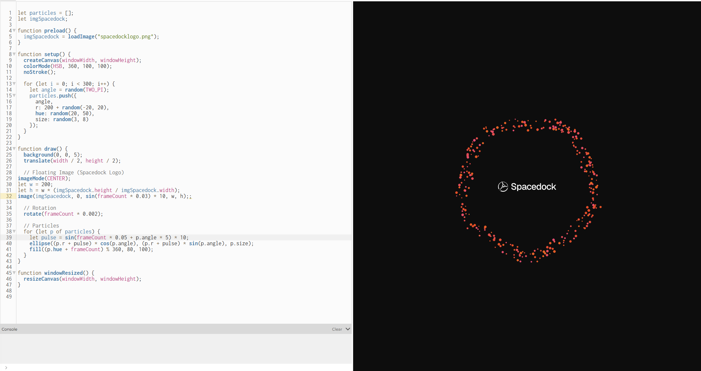
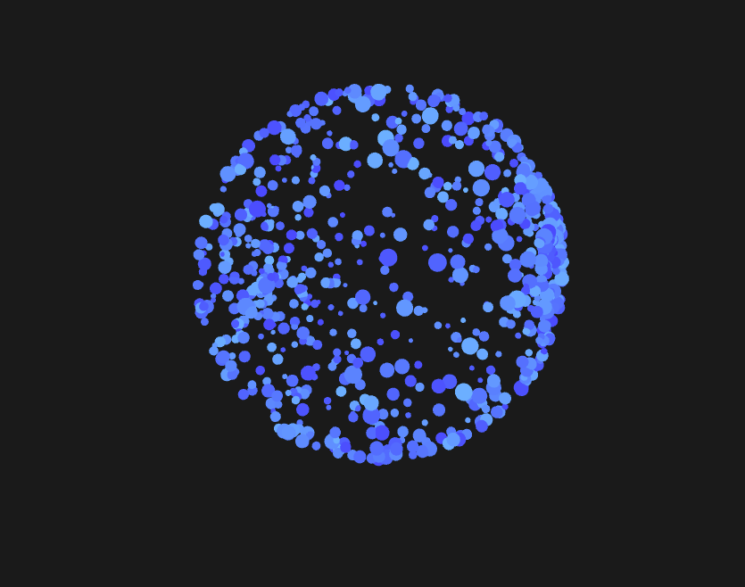
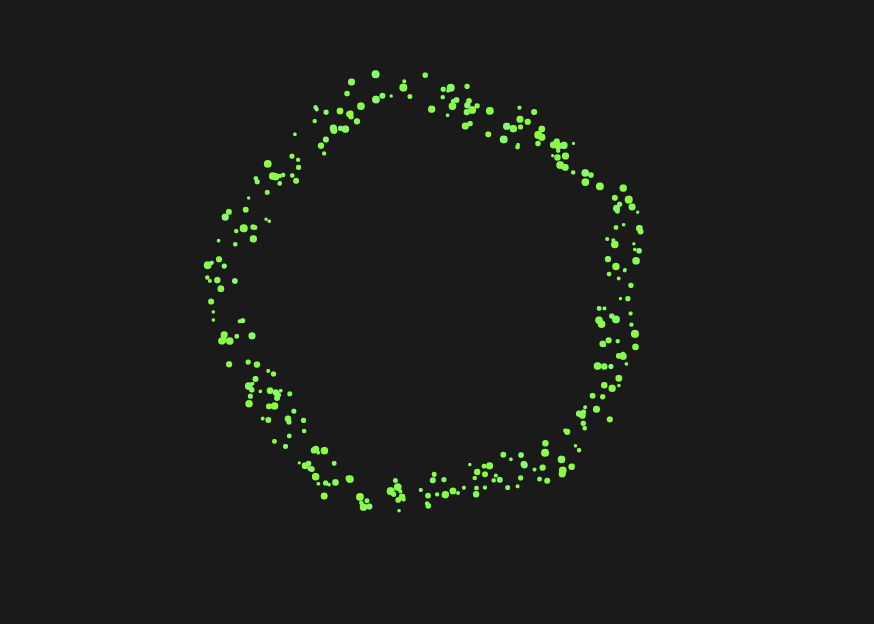
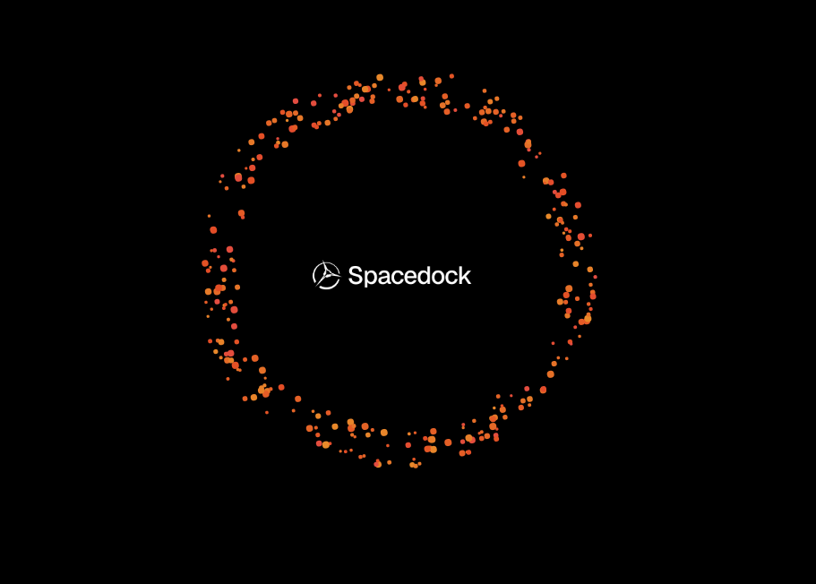

Roxanna's Week 8 P5js Homework
Calm Orbit
For this assignment, I had a lot of fun exploring different concepts. I didn’t start with a set plan for what I wanted to create, but instead went with the flow as I searched for inspiration.
To start, I wanted to create something very simple to get a grasp of the code and gain a general understanding of how it worked. Displayed below is a simple rainbow grid that helped me get a better understanding of the code and the various aspects of it.
Once I felt comfortable, I decided to create an asset that I could potentially use on my portfolio website. To connect this sketch to my career so far — having worked in robotics and now at a space infrastructure company — I thought it would be interesting to design something reminiscent of an orbit. To be honest, building code from scratch has never been my strong suit, but one thing I am confident in is my ability to read code and make adjustments as I go.
I knew I wanted to create something that had the look of particles. With this in mind, I first searched the Reference section of P5.js but didn't find anything related to particles. I eventually came across a tutorial, but I still wasn't able to achieve exactly what I envisioned. As a last-ditch effort, I turned to ChatGPT for suggestions on a starting point.

Click here to view the video tutorial I mentioned above.

With the generated code, I was able to experiment and make small adjustments along the way to better understand what I was trying to create. I played around with parameters like speed, pulse, color, and hues.

Once I achieved a calm, pulsing orbit with the particles, I wanted to incorporate the logo of the company I currently work at — Spacedock. While it seemed like a simple task, this actually proved to be the most challenging part. Every time I added the logo, it appeared stretched vertically. After several rounds of trial and error, I finally figured out how to properly adjust its width and height.
